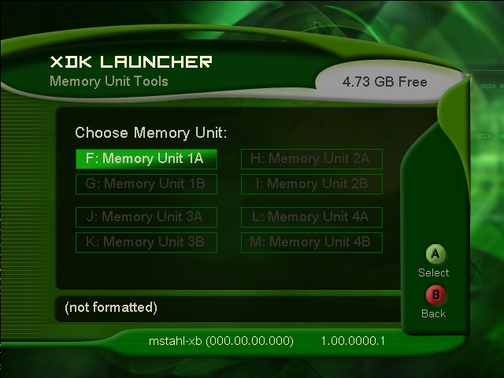
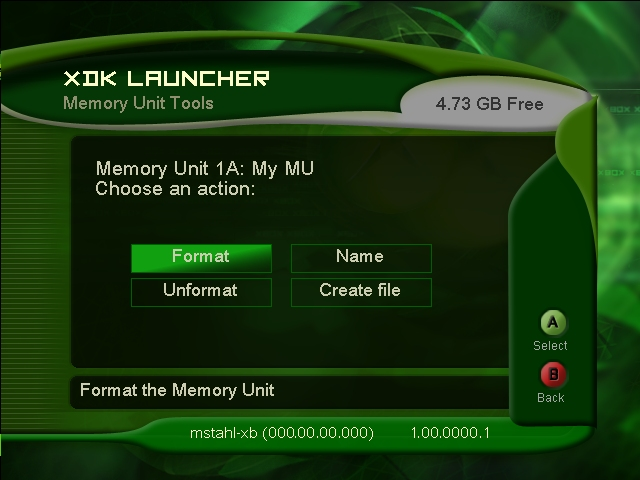

You access the Xbox memory unit tools by selecting Memory Unit Tools in the XDK Launcher Settings and Tools menu.

Illustration An image of the opening Memory Unit Tools screen.
First, a memory unit (MU) must be selected from the Memory Unit Tools screen.

Illustration An image of the Memory Unit Tools screen with an MU selected.
Once you have selected an MU, the following selections are available:
Note The Unformat, Name, and Create file commands will not be available until the MU has been formatted.